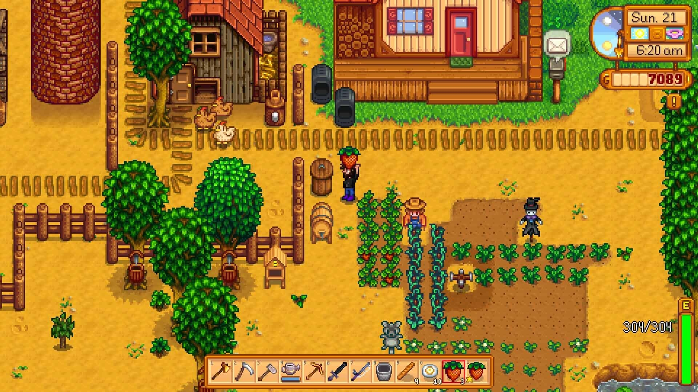

Stardew Valley
Mängu nimi
Stardew Valley
Platvorm, väljalaskeaeg, muu info, lühike sisututvustus
Platvorm: PC, PlayStation 4, Xbox One, Nintendo Switch, iOS, Android
Väljalaskeaeg: 26. veebruar 2016
Muu info: Stardew Valley on elusimulaatori ja rollimängu segu, kus mängija pärib oma vanaisa talu ja peab seda taastama.
Title screeni pilt

Ajalugu
Stardew Valley lugu algab, kui peategelane saab kirja oma vanaisalt, kes on talle pärandanud vana talu Pelican Townis. Mängija ülesanne on taastada talu ja muuta see õitsevaks. Samal ajal saab mängija suhelda linnaelanikega, avastada ümbrust ja osaleda erinevates sündmustes. Loo edenedes saab mängija teada rohkem ka linna ja selle elanike saladustest.

Gameplay
Stardew Valley gameplay keskendub talu haldamisele, mis hõlmab põllukultuuride kasvatamist, loomade hooldamist, kaevandustes töötamist ja kalapüüki. Mängijal on vabadus planeerida oma päev tegevuste ümber, nagu linnaelanikega suhtlemine ja festivale külastamine. Lisaks on mängus võimalik abielluda ja pere luua. Mäng pakub suurt hulka kohandamisvõimalusi ja mängustiile.
Arvustus
Stardew Valley on erakordne mäng, mis pakub lõputuid tunde meelelahutust. Graafika on meeldivalt retro ja mängumehaanika on sõltuvusttekitav. Iga päev toob uusi väljakutseid ja võimalusi, mis hoiavad mängija alati hõivatud. Erinevatel platvormidel mängides on kogemus sarnane, kuigi mobiiliversioonid pakuvad veidi mugavamat mängimist liikvel olles. Stardew Valley on ideaalne mäng neile, kes otsivad rahulikku ja süvenevat mängukogemust.